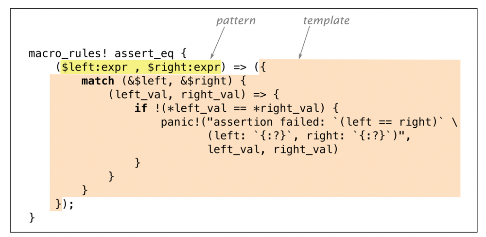
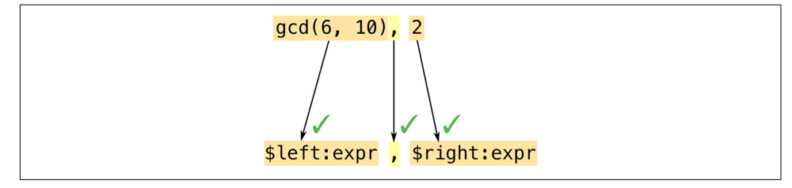
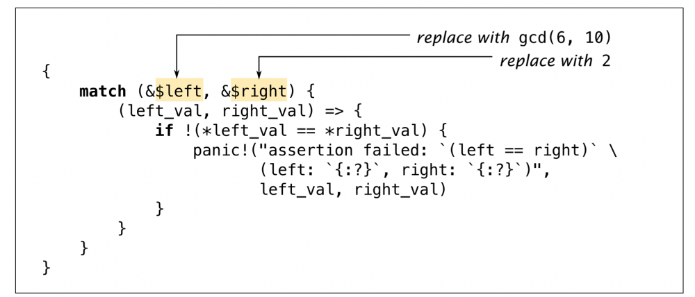
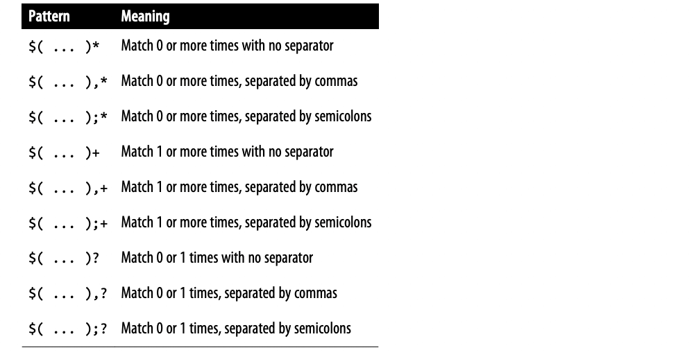
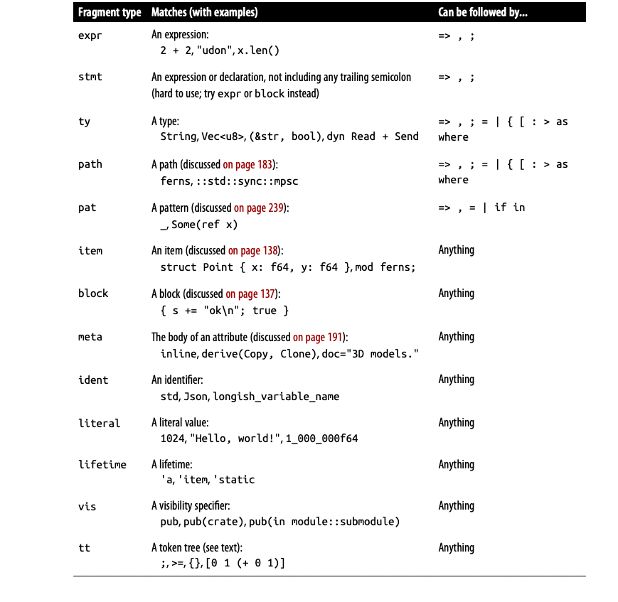
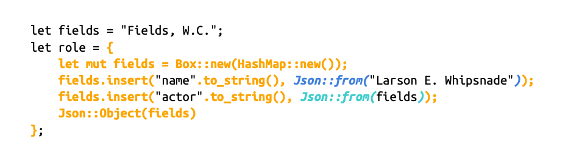
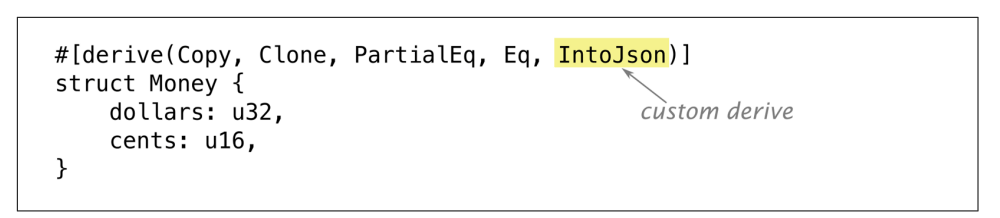

【Rust】宏
Rust 语言支持宏，如我们之前使用的 assert_eq!，println! 等。宏做了函数不能做的一些事情，例如，assert_eq! 当一个断言失败时，assert_eq! 生成包含断言的文件名和行号的错误消息，普通函数无法获取这些信息，但宏可以，因为它们的工作方式完全不同。
宏是一种简写，在编译期间，在检查类型和生成任何机器代码之前，每个宏调用都会被扩展。也就是说，它被一些 Rust 代码替换。assert_eq! 调用扩展为大致如下：
1 | match (&gcd(6, 10), &2) { |
panic! 也是一个宏，它本身扩展为更多的 Rust 代码。该代码使用到了另外两个宏：file!() 和 line!()。 一旦 crate 中的每个宏调用都被完全展开，Rust 就会进入下一个编译阶段。
在运行时，断言失败看起来像这样：
thread 'main' panicked at 'assertion failed: `(left == right)`, (left: `17`, right: `2`)', gcd.rs:7
如果熟悉 C++，可能对宏有过一些不好的体验。但是 Rust 宏采用不同的方法，类似于 Scheme 的语法规则。与 C++ 宏相比，Rust 宏可以更好地与语言的其余部分集成，因此更不容易出错。宏调用总是标有感叹号 !，因此在阅读代码时它们会比较突出，所以不会意外调用它们。Rust 宏从不插入不匹配的括号或圆括号，并且 Rust 宏带有模式匹配，使得编写既可维护又易于使用的宏变得更加容易。
在本节中，我们将通过几个简单的例子来展示如何编写宏。但与 Rust 的大部分内容一样，理解宏需要下很大功夫。在这里将介绍一个很复杂的宏的设计，它可以将 JSON 文字直接嵌入到我们的程序中。但是宏的内容涵盖的非常多，因此这里将提供一些进一步研究的建议，包括我们在此处展示的高级技术，以及称为过程宏的更强大的工具。
宏基础
首先我们来看下 assert_eq! 的代码：

macro_rules! 是在 Rust 中定义宏的主要方式。在此宏定义中的 assert_eq 之后没有!，! 仅在调用宏时，而不是在定义时。
并非所有的宏都以这种方式定义：如 file!、line! 和 macro_rules！ 它本身是内置在编译器中的，我们将在本章末尾讨论另一种方法，称为过程宏。但在大多数情况下，我们将专注于 macro_rules!，这是迄今为止自己编写宏最简单的方法。
用 macro_rules! 定义的宏完全通过模式匹配工作。宏的主体只是一系列规则：
( pattern1 ) => ( template1 );
( pattern2 ) => ( template2 );
...
顺便说一句，可以使用方括号或花括号代替模板周围的圆括号；这对 Rust 没有任何影响。同样，当调用宏时，这些都是等价的：
1 | assert_eq!(gcd(6, 10), 2); |
唯一的区别是花括号后面的分号通常是可选的。按照惯例，我们在调用 assert_eq! 时使用括号，为 vec! 使用方括号，为 macro_rules! 使用花括号。
现在我们已经展示了一个宏扩展的简单示例和生成它的定义，我们可以深入了解使其工作所需的细节：
-
我们将准确解释
Rust如何在程序中查找和扩展宏定义； -
我们将指出从宏模板生成代码的过程中固有的一些微妙之处；
-
最后，我们将展示模式如何处理重复结构；
宏扩展
Rust 在编译前期就会将宏展开，编译器从头到尾读取源代码，将定义的宏进行展开，所以不能在定义之前使用宏。（相比之下，函数和其他项不必按任何特定顺序排列，可以调用直到稍后在 crate 中才定义的函数。）
当 Rust 展开一个 assert_eq 宏调用时，发生的事情很像计算匹配表达式。Rust 首先将参数与模式匹配，如下图所示：

宏模式是 Rust 中的一种小型语言，它们本质上是用于匹配代码的正则表达式。但正则表达式是对字符进行操作，而模式则是对 token 进行操作–数字、名字、标点符号等等，这些都是Rust程序的组成部分。这意味着你可以在宏模式中自由地使用注释和空白，以使它们尽可能地可读。注释和空白不是标记，所以它们不会影响匹配。
正则表达式和宏模式之间的另一个重要区别是，在 Rust 中，小括号、大括号和圆括号总是以匹配对的形式出现。不仅在宏模式中，而且在整个语言中，在展开宏之前都会检查这些。
在这个例子中，我们的模式包含了 $left:expr 这个片段，它告诉 Rust 匹配一个表达式（在这个例子中，gcd(6, 10)）并将其命名为$left。然后 Rust 将模式中的逗号与 gcd 的参数后面的逗号进行匹配。就像正则表达式一样，模式中只有几个特殊的字符可以触发有趣的匹配行为，比如这个逗号，都必须逐字匹配，否则匹配失败。最后，Rust 匹配了表达式 2，并给它命名 $right。
这个模式中的两个代码片段都是 expr 类型的：期望匹配表达式。由于这个模式匹配了所有的参数，Rust 展开了相应的模板，如下图所示：

Rust 将 $left 和 $right 替换成它在匹配过程中发现的代码片段。
在输出模板中包含片段类型是一个常见的错误：写$left:expr而不是只写$left。Rust不会立即发现这种错误。它把$left看作是一个替换，然后它把:expr和模板中的其他东西一样看待：要包含在宏的输出代码中的token。因此，在你调用宏之前，这些错误不会发生；然后它将产生假的输出，无法编译。如果你得到错误信息，如在这个范围内找不到expr类型： help: maybe you meant to use a path separator here。
宏模板与网络编程中常用的十几种模板语言并无太大区别。唯一不同的是，它的输出是 Rust 代码，这一点很重要。
意外后果
将代码片段插入模板，与使用数值的常规代码有微妙的不同,这些差异起初并不总是很明显。我们一直在看的宏，assert_eq!，包含了一些略显奇怪的代码片段，其中的原因说明了宏编程的很多问题，让我们特别看看两个有趣的部分。
首先，为什么这个宏要创建变量 left_val 和 right_val，下面这样写为何不可以？
1 | if !($left == $right) { |
要回答这个问题，请尝试在头脑中展开宏调用 assert_eq!(letters.pop(), Some('z'))。输出会是什么？当然，Rust 会把匹配的表达式插入到模板的多个地方。不过，在构建错误信息时重新计算这些表达式似乎是个坏主意，这不仅仅是因为它会花费两倍的时间：因为 letters.pop() 会从一个向量中移除一个值，所以在我们第二次调用时它会产生一个不同的值，这就是为什么真正的宏只计算一次$left和$right并存储它们的值。
接下来是第二个问题：为什么这个宏要借用 $left 和 $right 的值的引用，为什么不直接在变量中存储这些值，像这样？
1 | macro_rules! bad_assert_eq { |
对于我们所考虑的特殊情况，即宏的参数是整数，这可以正常工作。但是，如果调用者将一个字符串变量作为 $left 或 $right 来传递，这段代码就会将该变量的值移出：
1 | fn main() { |
因为我们不希望断言移动数值，所以这个宏借用了引用来代替，看一个个经典的 C++ 宏错误：
1 | // buggy C++ macro to add 1 to a number |
大多数 C++ 程序员很熟悉这个原因，像 ADD_ONE(1)*10 或 ADD_ONE(1<<4) 这样不起眼的代码在这个宏下会产生非常意想不到的结果。要解决这个问题，需要在宏定义中加入更多的括号。这在 Rust 中是没有必要的，因为 Rust 的宏与语言的集成度更高。Rust 知道它是如何处理表达式的，所以当它把一个表达式粘贴到另一个表达式上时，它就会自动添加有效的括号。
重复
标准的 vec! 有两种使用方式：
1 | // Repeat a value N times |
它可以被像下面这样实现：
1 | macro_rules! vec { |
这里有 3 个规则，我们将解释多个规则如何工作，然后挨着解释。
当 Rust 展开宏 vec![1, 2, 3]，它首先使用第一个规则匹配 1, 2, 3。但是第一条规则中的 $elem:expr ; $n:expr 匹配失败，1 是一个表达式，但是要求其之后应该是一个 ;，这里没有。所以 Rust 开始尝试第二条规则，如果所有规则尝试之后都没有匹配，就会报错。
第一条规则处理像 vec![0u8; 1000] 这样的用法。碰巧的是，有一个标准的碰巧有一个标准的函数，std::vec::from_elem，它正好做了这里所需要的事情，所以这条规则很简单。
第二条规则处理像 vec!["udon", "ramen", "soba"] 这样的用法，规则 $( $x:expr ),* 匹配 0 个或者多个有 , 分割的表达式。更一般地说，语法$( PATTERN ),* 用于匹配任何逗号分隔的列表，其中列表中的每一项都与 PATTERN 匹配。
* 是一个重复符号，类似于正则表达式中，表示重复 0 个或者多个，而 + 相同，只是只是重复 1 个或者多个。
下面是 Rust 支持的重复规则：

示例中的 $x 不是一个单个的表达式，而是一个表达式列表，这个规则的模板也使用了重复的语法：
1 | <[_]>::into_vec(Box::new([ $( $x ),* ])) |
这里也有标准的方法能够确切完成我们想要的工作，这里的代码创建了一个 boxed 数组，然后使用 [T]::into_vec 转换成一个 vector。第一点，<[_]>，是一种不寻常的写法，用来写 “某类型的切片” 类型，同时希望Rust能推断出元素的类型。普通标识符类型名称可以被用在表达式中，但是 fn()，&str或者 [_] 必须由尖括号 <> 包裹。
重复出现在模板的最后，我们有 $($x),*，这个 $(...),* 与我们在模式中看到的语法相同。它遍历了我们为 $x 匹配的表达式列表，并将它们全部插入到模板中，用逗号分隔。
在这种情况下，重复输出看起来就像输入一样，但情况不一定是这样的，我们可以把规则写成这样。
1 | ( $( $x:expr ),* ) => { |
这里，模板中读取 $( v.push($x); )* 的部分为 $x 中的每个表达式插入了对 v.push() 的调用。一个宏匹配规则可以扩展到一连串的表达式，但这里我们只需要一个表达式，所以我们把 vector 的组装包在一个块中。
与 Rust 的其他部分不同，使用 $( ...),* 的模式不会自动支持可选的尾部逗号。然而，有一个标准的技巧来支持尾部逗号，那就是添加一个额外的规则，这就是我们的vec！宏的第三条规则的作用。
1 | ( $( $x:expr ),+ ,) => { // if trailing comma is present, |
我们使用 $( ...),+ , 来匹配一个带有额外逗号的列表。然后，在模板中，我们递归地调用 vec!，把多余的逗号留出来。这一次，第二条规则将被匹配。
内建宏
Rust 编译器提供了几个宏，当定义自己的宏时，这些宏很有帮助。这些都不能单独使用 macro_rules! 来实，它们在 rustc 中是硬编码的。
-
file!()、line!()、column!()：file!()展开成一个字符串字面量，表示当前文件的名称；line!()和column!()扩展成u32字面量表示当前的行号和列号；如果一个宏调用另一个宏，而另一个宏又调用另一个宏，而且都在不同的文件中，最后一个宏调用
file!()、line!()或column!()，它将展开以指示第一个宏调用的位置。 -
stringify!(...tokens...)：展开成一个包含给定标识的字符串字面量，assert!宏使用它来生成一个错误信息，其中包括断言的代码。参数中的宏调用不会被扩展：
stringify!(line!())会扩展为字符串"line!()"。Rust从标示中构造字符串，所以字符串中没有换行或注释。 -
concat!(str0, str1, ...)：将它的参数连接起来，展开成一个字符串；
Rust 还定义了一些查询环境变量的宏：
-
cfg!(...)：展开为一个布尔值，如果当前的编译配置符合括号中的条件，则为真。例如，如果你在编译时启用了调试断言，cfg!(debug_assertions)则为真。这个宏支持的语法与
#[cfg(...)]属性完全相同，但你得到的不是条件性编译，而是一个真或假的值。 -
env!("VAR_NAME")：展开成一个字符串：在编译时指定的环境变量的值，如果这个变量不存在，就是一个编译错误。除了
Cargo在编译时设置了几个有趣的环境变量外，这将是相当无用的。例如，要获得crate的当前版本字符串，可以这样写。1
let version = env!("CARGO_PKG_VERSION");
环境变量的完整列表可以看
Cargo Documentation。 -
option_env!("VAR_NAME")：和env!大致相同，除了返回Option<&'static str>，所以如果设置的环境变量不存在，将返回None；
这里还有三个内建的宏可以将代码或者数据从另外的文件中包含进来：
-
include!("file.rs")：展开成指定文件的内容，必须是有效的Rust代码； -
include_str!("file.txt")：展开成指定文件的静态文本，类型是&'static str，可以这样使用：1
const COMPOSITOR_SHADER: &str = include_str!("../resources/compositor.glsl");
如果文件不存在或者不是有效的
utf-8，就会有编译错误。 -
include_bytes!("file.dat")：这是和之前的相同的，只是被当做二进制数据，不是UTF-8文本，结果是&'static [u8]；
像所有的宏一样，这些都在编译时间处理，如果文件不存在那就编译失败，在所有的例子中，文件名称是一个相对路径，相对当前文件进行解析。
Rust 还提供了几个我们之前没有介绍过的方便的宏：
-
todo!()、unimplemented!()：这些与panic!()等价，但表达了不同的意图。unimplemented!()出现在if子句、匹配分支和其他尚未处理的情况中。todo!()也是如此，但它传达的意思是，这段代码还没有写完； -
matches!(value, pattern)：将一个值与一个模式进行比较，如果匹配则返回真，否则返回假，这等同于写：1
2
3
4match value {
pattern => true,
_ => false
}
调试宏
调试一个宏可能是一个挑战，最大的问题是缺乏对宏扩展过程的了解。Rust 经常会展开所有的宏，发现某种错误，然后打印一条错误信息，但并不显示包含错误的完全展开的代码。
这里有三个工具可以帮助排除宏的故障。(这些功能都是不稳定的，但由于它们确实是被设计成在开发过程中使用，而不是在你要检查的代码中使用，所以在实践中这不是一个大问题)。
首先，也是最简单的，你可以要求 rustc 显示你的代码在扩展所有宏之后的样子。使用 cargo build --verbose 来查看 Cargo 是如何调用 rustc 的。 复制 rustc 的命令行，并添加 -Z unstable-options --pretty expanded 作为选项，完全展开的代码会被输出终端。不幸的是，这只有在代码没有语法错误的情况下才有效。
其次，Rust 提供了一个 log_syntax!() 宏，在编译时简单地将其参数打印到终端，可以用它来进行 println!-style 调试，这个宏需要 #![feature(log_syntax)]特性标志。
第三，可以要求 Rust 编译器将所有宏调用打印到终端，在代码中插入trace_macros!(true);。从那时起，每次 Rust 展开一个宏时，它都会打印出宏的名称和参数，例如：
1 |
|
这将输出：
note: trace_macro
--> src/main.rs:6:19
|
6 | let numbers = vec![1, 2, 3];
| ^^^^^^^^^^^^^
|
= note: expanding `vec! { 1, 2, 3 }`
= note: to `$crate :: __rust_force_expr! (< [_] > :: into_vec(box [1, 2, 3]))`
= note: expanding `__rust_force_expr! { < [_] > :: into_vec(box [1, 2, 3]) }`
= note: to `<[_]>::into_vec(box [1, 2, 3])`
Finished dev [unoptimized + debuginfo] target(s) in 0.51s
Running `target/debug/crosscompile`
total: 6
编译器展示了每个宏展开前后调用的代码，trace_macros!(false); 会关闭这个 trace，所以 println!() 展开的内容不会打印出来。
构建 json!
我们现在已经讨论了 macro_rules! 的核心功能! 在本节中，我们将逐步开发一个用于构建JSON 数据的宏。我们将用这个例子来说明宏的开发，介绍 macro_rules! 的其余部分，并提供一些建议以确保宏的行为符合要求。我们来看一个表示 JSON 数据的枚举：
1 |
|
不幸的是，写出 Json 值的语法相当冗长。
1 | let students = Json::Array(vec![ |
我们希望能用一种更类似 JSON 的语法来写这个：
1 | let students = json!([ |
我们想要的是一个 json! 宏，它接受一个 JSON 值作为参数，并展开为一个像前面例子中的 Rust 表达式。
本节完整的代码可以看 https://github.com/ProgrammingRust/examples/tree/master/json-macro。
片段类型
写入任何复杂宏的前提是指出如何匹配或解析所需的输入。
我们已经可以看到，这个宏会有几条规则，因为JSON数据中有几种不同的东西：对象、数组、数字，等等。事实上，我们可以猜测，我们将为每种JSON 类型制定一条规则。
1 | macro_rules! json { |
这并不完全正确，因为宏模式没有提供区分后三种情况的方法，但我们以后会看到如何处理这个问题。至少前三种情况显然是以不同的标记开始的，所以我们就从这些开始。第一条规则已经起作用了：
1 | macro_rules! json { |
为了增加对 JSON 数组的支持，我们可以尝试将元素匹配为 exprs：
1 | macro_rules! json { |
不幸的是，这并不符合所有的 JSON 数组，这里有一个测试，说明了这个问题。
1 |
|
表达式 $( $element:expr ),* 表示一个逗号分割的 Rust 表达式，但是许多 JSON 值，特别是 JSON 对象，不是有效的 Rust 表达式，它们不匹配。所以这里的 { "pitch": 440.0 } 匹配失败。
由于不是每一段你想匹配的代码都是表达式，Rust 支持其他几种片段类型，如下图所示：

表中的大多数选项都严格执行 Rust 语法。expr 类型只匹配 Rust 表达式（不是 JSON 值），ty 只匹配 Rust 类型，以此类推。它们是不可扩展的：没有办法定义新的算术运算符或 expr 可以识别的新关键字，我们将无法使其中任何一个匹配任意的 JSON 数据。
最后两个，ident 和 tt，支持匹配看起来不像 Rust 代码的宏参数，ident 匹配任何标识符。tt 匹配一个单一的 token树：要么是一对提前匹配的括号，(...)，[...]，或 {...}，以及两者之间的一切，包括嵌套的标记树，或者不是括号的单一标记，如 1926 或 "Knots"。
token 树正是我们的 json! 宏所需要的，每个 JSON 值都是一个单一的标记树：数字、字符串、布尔值和 null 都是单一的标记，对象和数组则用括号表示，所以我们可以这样写模式。
1 | macro_rules! json { |
这个版本的 json! 宏可以匹配所有的 JSON 数据，现在我们只需要编写正确的Rust代码。
为了确保 Rust 能够在未来获得新的语法特性而不破坏你现在编写的任何宏，Rust 限制了紧随片段之后出现在模式中的标记。上表中的 "Can be followed by..." 列显示了哪些标记被允许。例如，模式 $x:expr ~ $y:expr 是一个错误，因为 ~ 在 expr 后面是不允许的。模式 $vars:pat => $handler:expr 是可以的，因为 $vars:pat 后面是箭头 =>，是 pat 允许的标记之一，而$handler:expr 后面是空的，这也是允许的。
宏中的递归
我们已经看到了一个宏调用自身的例子：我们对 vec! 的实现使用递归来支持尾部逗号。这里我们可以展示一个更重要的例子：json! 需要递归地调用自己。我们可以尝试在不使用递归的情况下支持 JSON 数组，像这样。
1 | ([ $( $element:tt ),* ]) => { |
但这并不可行，我们会把 JSON 数据（ $elemen 标记树）直接粘贴到 Rust 表达式中，它们是两种不同的语言。我们需要将数组的每个元素从 JSON 形式转换为 Rust 形式。例如：
1 | ([ $( $element:tt ),* ]) => { |
JSON 对象可以按照这种方式支持：
1 | ({ $( $key:tt : $value:tt ),* }) => { |
编译器对宏施加了一个递归限制。默认情况下是 64 个调用。这对于 json 的正常使用是绰绰有余的，但复杂的递归宏有时会触及这个限制。可以通过在使用宏的 crate 顶部添加下面这个属性来调整它。
1 |
至此 json! 宏已经接近完成，剩下的就是支持布尔值、数字和字符串值了。
使用 Trait
在这里，我们需要支持 json!(true)、json!(1.0) 和 json!("yes")，将值转换为适当类型的 Json 值，但是宏并不擅长区分类型，我们可以想象一下写成这样：
1 | macro_rules! json { |
这种方法马上就被证明是错的，只有两个布尔值，但比这更多的数字，甚至更多的字符串。幸运的是，有一种标准的方法可以将各种类型的值转换为一种指定的类型：From，我们只需要为一些类型实现这个特性。
1 | impl From<bool> for Json { |
事实上，所有12种数字类型都应该有非常相似的实现，所以写一个宏可能是有意义的，只是为了避免复制和粘贴。
1 | macro_rules! impl_from_num_for_json { |
现在我们可以使用 Json::from(value) 来将任何支持的类型的值转换为 Json。在我们的宏中，它看起来会是这样的：
1 | ( $other:tt ) => { |
把这个规则添加到我们的 json! 宏中，使它通过我们到目前为止所写的所有测试。把所有的部分组合起来，目前看起来是这样的：
1 | macro_rules! json { |
事实证明，这个宏出乎意料地支持在 JSON 数据中使用变量，甚至是任意的 Rust 表达式，这是一个方便的额外功能。
1 | let width = 4.0; |
因为 (width * 9.0 / 4.0) 是括号内的，它是一个单一的 token 树，所以宏在解析对象时成功地将其与 $value:tt 相匹配。
Scoping and Hygiene
接下来介绍了 Rust 处理范围的两种方式：一种方式用于局部变量和参数，另一种方式用于其他所有内容。为了说明为什么这很重要，让我们重写解析 JSON 对象的规则（前面显示的 json! 宏中的第三条规则）以消除临时向量，我们可以这样写：
1 | ({ $($key:tt : $value:tt),* }) => { |
现在我们不是通过使用 collect() 而是通过重复调用 .insert() 方法来填充 HashMap。这意味着我们需要将 map 存储在一个临时变量中，我们称之为fields。如果在调用 json! 的地方正好有个临时变量 fields 会如何？
1 | let fields = "Fields, W.C."; |
宏展开会将两处代码粘贴在一起，但是两处都使用的 fields 是不同的，就像：
1 | let fields = "Fields, W.C."; |
这里的宏正常工作，Rust 重命名变量。这个功能首先在 Scheme 宏中实现，称为hygiene，因此据说 Rust 具有 hygienic macros，理解宏 hygiene 的最简单方法是想象每次展开宏时，来自宏本身的扩展部分都被涂上不同的颜色。
然后，不同颜色的变量被视为具有不同的名称：

注意，由宏调用者传入并粘贴到输出中的代码位，如 "name" 和 "actor"，保持其原始颜色（黑色），只有源自宏模板的 token 被换装。
现在有一个名为 fields 的变量（在调用者中声明）和一个名为 fields 的单独变量（由宏引入）。由于名字是不同的颜色，这两个变量不会被混淆。
如果一个宏真的需要引用调用者范围内的一个变量，调用者必须把这个变量的名字传给宏。
你可能已经注意到，随着宏的展开，许多其他标识符被涂上一种或多种颜色。例如，Box、HashMap 和 Json。尽管被涂上了颜色，Rust在识别这些类型名称时并没有遇到困难。这是因为 Rust 中的 hygiene 被限制在局部变量和参数上。当涉及到常量、类型、方法、模块、状态和宏名称时，Rust 是色盲的。
这意味着，如果我们的 json! 宏在一个模块中使用，而Box、HashMap或Json不在范围内，那么这个宏就不能工作。
首先，我们将考虑一种情况，即 Rust 的严格 hygiene 规定会妨碍我们的工作，而我们需要绕过它，假设我们有很多函数都包含这一行代码。
1 | let req = ServerRequest::new(server_socket.session()); |
假设我们改为用宏：
1 |
|
正如所写，这不起作用。它需要宏中的名称 server_socket 来引用函数中声明的本地 server_socket，变量 req 反之亦然。但是hygiene 可以防止宏中的名称与其他范围内的名称冲突。
解决方案是将计划在宏代码内部和外部使用的任何标识符传递给宏：
1 | macro_rules! setup_req { |
因为 req 和 server_socket 现在是由函数提供的，它们是该范围的正确"颜色"。
宏的导入和导出
由于宏在编译的早期就被展开了，在 Rust 知道你项目的完整模块结构之前，编译器就有了导出和导入它们的特殊功能。
在一个模块中可见的宏在其子模块中自动可见，要将宏从模块向上导出到其父模块，请使用 #[macro_use] 属性。例如，假设我们的 lib.rs 看起来像这样：
1 | mod macros; |
在 macros 模块中定义的所有宏都导入到 lib.rs 中，因此在包的其余部分中可见，包括在 client 和 server 中。
标有 #[macro_export] 的宏是自动发布的，可以像其他项目一样通过路径引用。
例如，lazy_static 提供了一个名为 lazy_static 的宏，它被标记为 #[macro_export]。要使用这个宏，你可以写：
1 | use lazy_static::lazy_static; |
一旦被导入，他就可以像其他的任何导入一样使用：
1 | use lazy_static::lazy_static; |
当然，实际做这些事情意味着你的宏可能被其他模块调用。因此，一个导出的宏不应该依赖于任何在范围内的东西。不知道在它被使用的地方会有什么在作用域内，即使是标准预导入的功能也会被屏蔽。
macro_rules 提供了特殊 $crate 来帮助解决这个问题。这与 crate 不同，crate 是一个关键词，可以在任何地方用于路径，而不仅仅是在宏中。$crate 的作用就像一个绝对路径，指向定义宏的 crate 的根模块。我们不能写成 Json，而写成 $crate::Json，即使 Json 没有被导入，它也能发挥作用。HashMap 可以改成 ::std::collections::HashMap 或者$crate::macros::HashMap 。在后一种情况下，我们必须重新导出 HashMap，因为 $crate 不能被用来访问 crate 的私有特性。
来看下我们最终版本的 json!：
1 | pub use std::boxed::Box; |
由于 .to_string() 方法是标准 ToString 的一部分，我们也用 $crate 来引用它，使用"完全限定的方法调用"语法：$crate::macros::ToString::to_string($key)。在我们的例子中，这对于宏的工作并不是严格必要的，因为 ToString 是在标准的预导入中。但是如果你要调用一个 Trait 的方法，而这个 Trait 在调用宏的时候可能不在范围内，那么完全限定的方法调用是最好的方式。
语法错误
下面的宏只是看起来合理：
1 | macro_rules! complain { |
假设我们这样调用：
1 | complain!(user: "jimb", "the AI lab's chatbots keep picking on me"); |
在我们看来，这显然与第二个模式相匹配。但是Rust首先尝试了第一条规则，试图用$msg:expr来匹配所有的输入。但是 user: "jimb" 不是一个表达式，所以我们得到了一个语法错误。Rust 拒绝把语法错误传递到下面–宏已经够难调试了。相反，它会被立即报告并停止编译。
如果一个模式中的任何其他标记不能匹配，Rust 就会进入下一个规则。只有语法错误是致命的，而且只在试图匹配片段时发生。
这里的问题并不难理解：我们正试图在错误的规则中匹配一个片段 $msg:expr。它不会被匹配，调用者其实想要匹配另一条规则，有两个简单的方法来避免这种情况。
首先，避免易混淆的规则。例如，我们可以改变宏，使每个模式以不同的标识符开始。
1 | macro_rules! complain { |
当宏参数以 msg 开头时，将匹配规则 1。当它们以 user 开头时，将匹配规则2。无论哪种方式，我们都知道在尝试匹配片段之前我们已经获得了正确的规则。
避免虚假语法错误的另一种方法是首先放置更具体的规则，将 user: 规则放在第一个，就能解决了 complain! 的问题，因为导致语法错误的规则永远不会到达。
不止 macro_rules!
宏模式可以解析比 JSON 更复杂的输入，但我们发现复杂性很快就会失控。
《Rust Macros小书》是一本优秀的高级 macro_rules! 编程手册。这本书清晰明了，而且比我们这里更详细地描述了宏展开的每一个方面。它还介绍了几种非常聪明的技术，将 macro_rules! 模式作为一种神秘的编程语言来使用，以解析复杂的输入。
Rust 1.15 引入了一个单独的机制，叫做过程宏，它支持扩展 #[derive] 属性以处理自定义派生，如下图所示，也支持创建自定义属性和新的宏，其调用方式与前面讨论的 macro_rules! 宏一样。

实际上没有 IntoJson，但这并不重要：过程宏可以使用这个钩子来插入任何它想要的代码（在这种情况下，可能是 impl From<Money> for Json { ... }）。
过程宏是作为Rust的一个函数来实现的，而不是一个声明性的规则集。这个函数通过一个薄薄的抽象层与编译器交互，可以是任意复杂的。例如，diesel使用过程宏来连接数据库，并在编译时根据该数据库的模式生成代码。
由于过程宏与编译器内部相互作用，编写有效的宏需要对编译器的运行方式有所了解，可以在这里寻找你想要的。
也许，在阅读了这些内容之后，更不想用宏。另一个选择是使用构建脚本来生成 Rust 代码，Cargo 文档显示了如何一步一步地做到这一点。它包括编写一个程序来生成你想要的 Rust代码，在 Cargo.toml 中添加一行，作为构建过程的一部分来运行该程序，并使用 include! 来将生成的代码放入你的crate中。